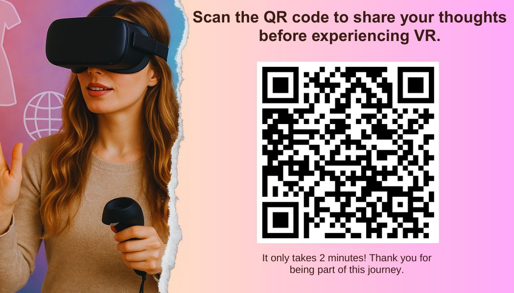
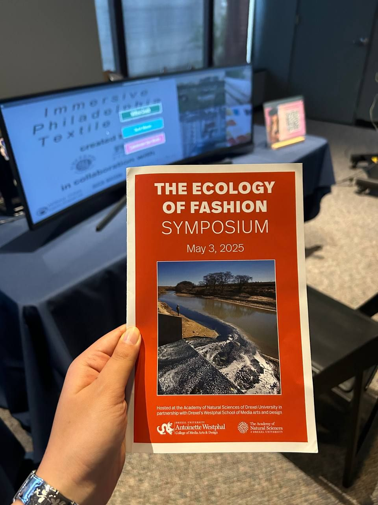
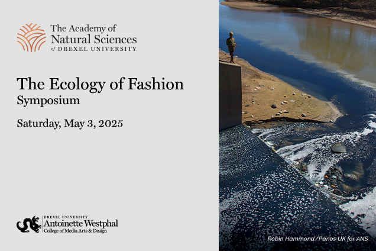
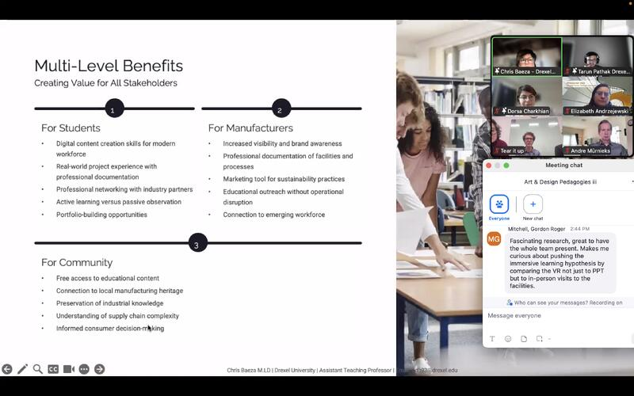

Case study · Immersive learning
Fashion technology VR initiative
Visitor research on an immersive VR experience about sustainable textiles.
Context
The experience takes visitors through where clothes come from: farms, factories and waste. Within a short exhibition window, we needed to learn what was working while visitors were still coming through, across audiences from children to fashion experts.

Approach
I met visitors right after they removed the headset with short QR-code surveys, five-minute interviews and observation notes, then clustered feedback each day and shared patterns with the team before the next round.


Finding
Visitors remembered the story, not the facts. Those who felt something could explain sustainability concepts better than those who only read about them.
The team cut back on statistics and strengthened the emotional scenes. In our follow-up surveys, engagement rose by 45% and comprehension by 50%.


Project video
What stayed with me
Understanding often starts with feeling. The same lesson applies to AI: people engage with systems that connect to their experience, not only their information needs.